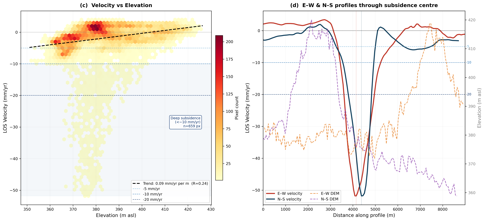
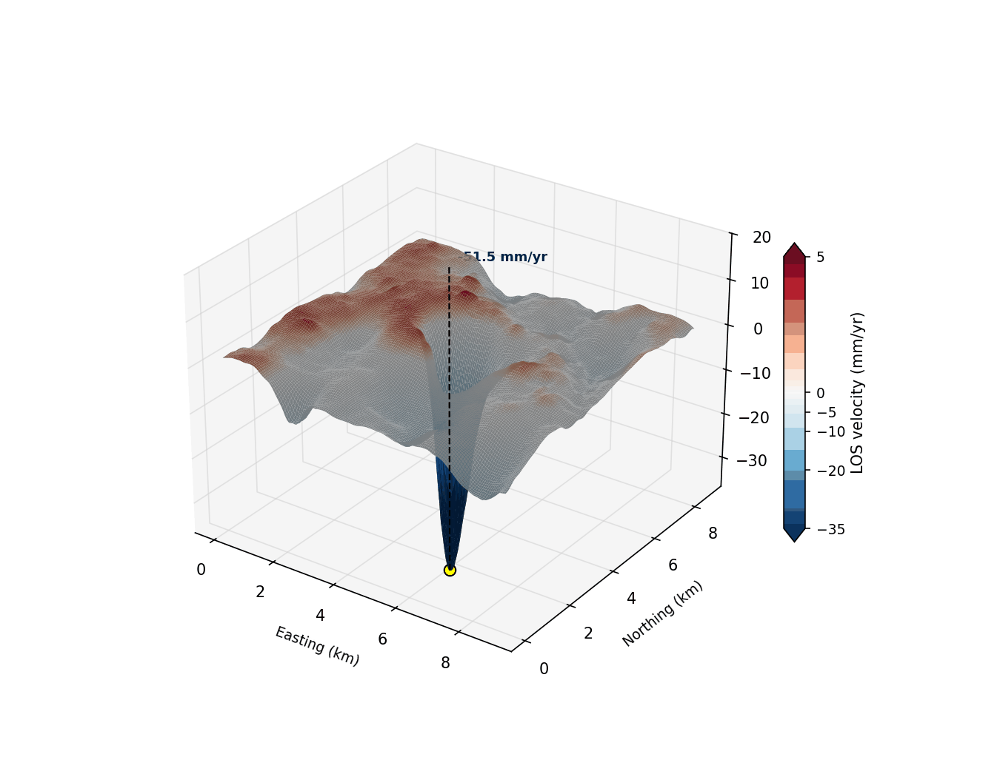

What it shows
Deformation bowls in the landscape
At this example site, two spatially distinct subsidence bowls are visible in the InSAR velocity field, overlaid on the local DEM. The bowls are coherent and well-defined, with subsidence contours reaching −5, −10, and −20 mm/yr around a peak of −51.8 mm/yr. The topographic setting shows that the most rapidly subsiding pixels cluster at lower to mid elevations — consistent with a process tied to subsurface fluid extraction rather than surface processes.

(a) Digital Elevation Model of the study area (360–430 m asl), with topographic contours. The star marks the minimum velocity location.
(b) InSAR LOS velocity map with subsidence contours at −5, −10, and −20 mm/yr, derived from Sentinel-1 ascending acquisitions.
Two distinct deformation bowls (yellow boxes) are clearly resolved. n = 20,693 pixels; peak: −51.8 mm/yr; mean: −1.8 mm/yr; 61% of pixels are subsiding.

(c) LOS velocity vs. elevation. A weak positive trend (0.09 mm/yr per m, R = 0.24) indicates lower terrain subsides more rapidly, pointing to a subsurface source rather than a topographic artefact. 659 pixels exceed −10 mm/yr ("deep subsidence").
(d) E–W and N–S profiles through the subsidence centre, co-plotted with the DEM profile (dashed). The bowl reaches −52 mm/yr at its deepest point; the asymmetric flanks reflect the spatial geometry of the underlying structure.
3-D rotation

Three-dimensional view of the LOS velocity field draped over the DEM and rotated to show the spatial extent and depth of the subsidence bowl. The animation makes it clear that the deformation is not a DEM artefact — the bowl sits within a topographic low but extends well beyond the terrain feature.